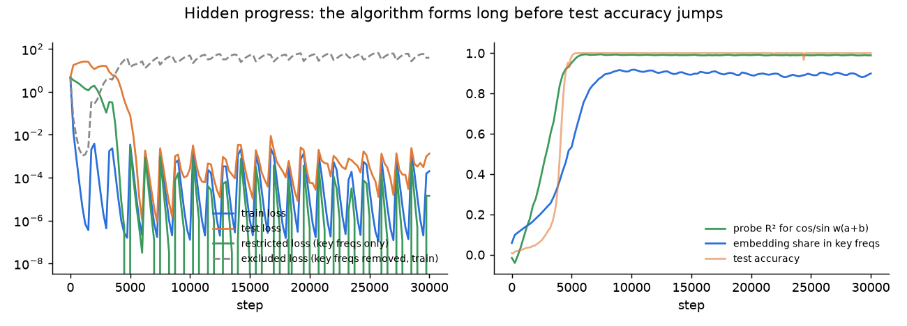
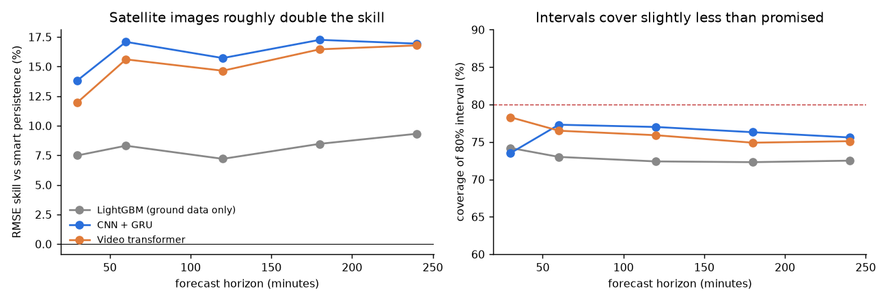
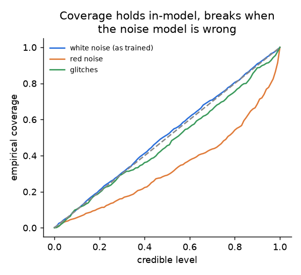
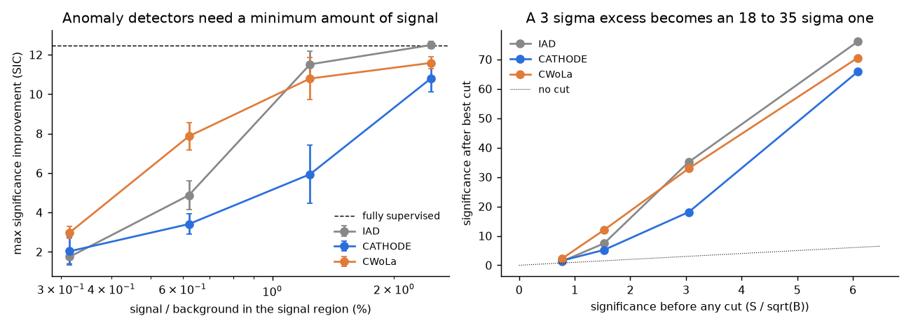
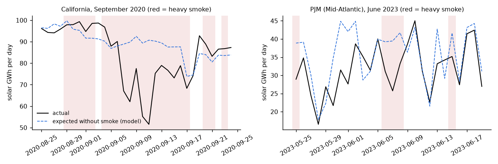
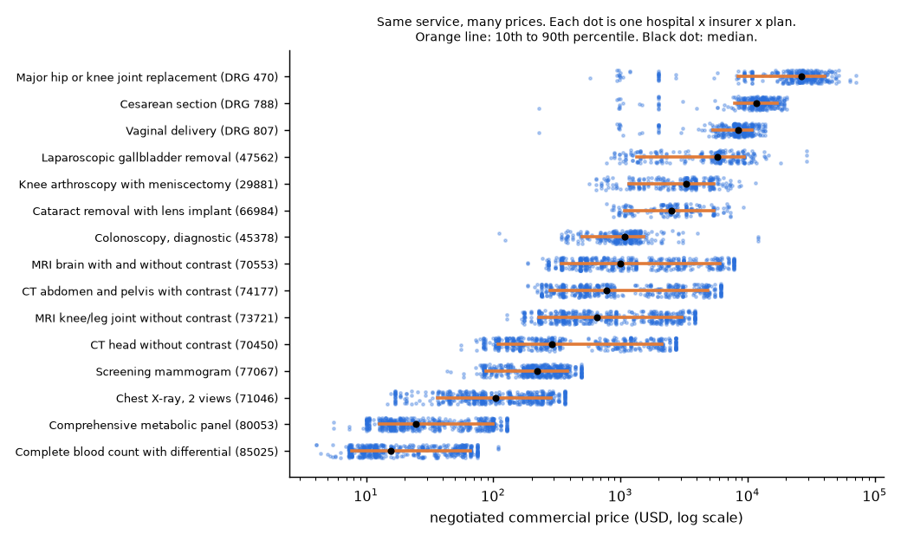

Problem: A small transformer trained on (a + b) mod 113 memorizes its training data in 200 steps but only generalizes thousands of steps later. What does it learn, and when?
Approach: Trained a one-layer transformer from scratch in PyTorch (23 runs in parallel on the MSU HPCC), then took it apart with Fourier analysis, linear probes, and causal ablations of embeddings and neurons.
Result: The network learns addition as rotation using 3 or 4 frequencies. Removing those 3 of 56 frequencies from the embedding drops test accuracy from 99.96% to 2.2%, while removing 3 random ones changes nothing. Progress measures show the general algorithm forming 1,350 to 2,650 steps before test accuracy jumps.

Hidden progress: the key-frequency algorithm (green) forms before test accuracy (orange) jumps.
Problem: Clouds decide how much sunlight reaches a solar farm in the next few hours. Can a model watching satellite images forecast it better than ground sensors alone?
Approach: Read 128 km crops of GOES-16 visible imagery every 30 minutes for 2022 to 2024 straight from NOAA's AWS bucket, paired them with ground measurements at the NOAA SURFRAD Penn State station, and trained a CNN-GRU and a video transformer with quantile outputs on an L40S GPU.
Result: On the 2024 test year the satellite models cut error by 14 to 17% against persistence, about twice the gain of a gradient-boosting model that only sees ground data. The simpler CNN-GRU edged out the transformer, and 80% intervals covered 73 to 78%, slightly overconfident.

Skill against persistence (left) and coverage of 80% intervals (right), 30 minutes to 4 hours ahead.
Tools: Python, PyTorch, CNN, transformer, LightGBM, pvlib, AWS open data
Problem: Neural networks can return a full posterior in a fraction of a second, but are their error bars right?
Approach: Trained a CNN plus neural spline flow on fresh simulations of a gravitational-wave-like chirp in noise, then tested calibration, compared against nested sampling on the exact likelihood, and tested it on data with the wrong noise model.
Result: Well calibrated on average (90% intervals cover 90.9%) and about 300 times faster than nested sampling. With correlated noise it was never trained on, 90% intervals cover only 69%: calibration in-distribution says nothing about shifted data.

Coverage holds on data like the training data and breaks when the noise model is wrong.
Problem: Can a search find a new particle without being told what it looks like?
Approach: Benchmarked weakly supervised (CWoLa) and normalizing-flow (CATHODE) anomaly detection against idealized and fully supervised references on 1.1 million simulated events, with signal injected at levels too small to see by eye.
Result: With no signal, no method invents one. Around 1% signal-to-background the best methods turn a 3 sigma excess into 18 to 35 sigma. My CATHODE implementation underperforms the original paper, which points to the flow's background model as the weak link.

Anomaly detectors need a minimum amount of signal before they help.
Tools: Python, PyTorch, zuko, scikit-learn, boosted trees
Problem: Wildfire smoke dims the sun. How much does it lower utility-scale solar output across the US grid?
Approach: Joined NOAA satellite smoke polygons, hourly EIA-930 solar generation for 21 grid operators and ERA5 weather from 2018 to 2025, and fit a fixed-effects panel regression with weather controls, robustness checks and a placebo test.
Result: Heavy smoke cuts daily solar output by 11% (95% CI 9 to 13%). A naive comparison gets the sign wrong because smoke days are often sunny. On California's orange-sky day in September 2020, output was about 40% below the no-smoke expectation.

Actual solar output (black) against the model's no-smoke expectation (blue) during two smoke events.
Problem: Hospitals must now publish every price they negotiate with insurers, in huge and inconsistent files. How much do prices vary, and why?
Approach: Streamed and filtered 54 price files from four Michigan health systems (up to 1.3 GB each) with DuckDB, cleaned payer names, modifiers and billing classes, and decomposed the variation in price.
Result: For the median service the 90th percentile price is 5.6 times the 10th. Most of the spread comes from service-specific contract terms, not from which hospital or insurer. Commercial insurers pay a median 1.6 times the Medicare Advantage price for the same service at the same hospital.

Each dot is one hospital, insurer and plan. Orange lines span the 10th to 90th percentile.